항공산업기사 (2011-10-02 기출문제)
1과목: 항공역학
1. 항공기가 세로안정성이 있다는 것은 다음 중 어느 경우에 해당하는가?
- 받음각이 증가함에 따라 키놀이 모멘트값이 부(-)의 값을 갖는다.
- 받음각이 증가함에 따라 빗놀이 모멘트값이 정(+)의 값을 갖는다.
- 받음각이 증가함에 따라 빗놀이 모멘트값이 부(-)의 값을 갖는다.
- 받음각이 증가함에 따라 옆놀이 모멘트값이 정(+)의 값을 갖는다.
(정답률: 60%)

2. 옆놀이 커플링(Roll Coupling)을 줄이는 방법으로 틀린 것은?
- 방향 안정성을 증가시킨다.
- 쳐든각 효과를 감소시킨다.
- 정상 비행 상태에서 바람축과의 경사를 최대한 크게 한다.
- 정상 비행 상태에서 불필요한 공력 커플링을 감소 시킨다.
(정답률: 52%)
3. 한쪽 날개 끝에서 반대쪽 날개 끝까지 길이가 260cm 이고 날개뿌리 시위길이가 100cm 인 삼각형 날개의 가로세로비는?
- 1.0
- 2.6
- 5.2
- 6.0
(정답률: 43%)
4. 그림과 같은 프로펠러의 한 단면에서 번호와 해당하는 명칭이 옳게 짝지어진 것은? (단, V : 항공기의 진행속도, VL : 프로펠러의 회전속도이다.)
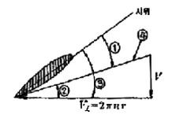
- ① - 피치각
- ② - 받음각
- ③ - 깃각
- ④ - 전진속도
(정답률: 80%)
5. 가로세로비가 10, 양력계수가 1.2, 스팬효율계수가 0.8인 날개의 유도항력계수는 약 얼마인가?
- 0.018
- 0.046
- 0.048
- 0.⑤7
(정답률: 49%)
6. 항공기의 승강기(Elevator) 조작은 어떤 축에 대한 운동을 하는가?
- 세로축(Longitudinal Axis)
- 가로축(Lateral Axis)
- 방향축(Directional Axis)
- 수직축(Vertical Axis)
(정답률: 83%)
7. 프로펠러의 추력을 나타내는 식으로 옳은 것은? (단, A : 프로펠러의 회전면적, p : 공기의 밀도, V :비행속도, v : 프로펠러의 유도속도이다.)
- pA(V+v)v
- 2pA(V+v)v
- pA(V-v)v
- 2pA(V-v)v
(정답률: 58%)
8. 대기권에서 기온이 가장 낮은 층은?
- 성층권
- 성층권 계면
- 대류권
- 중간권 계면
(정답률: 63%)
9. 수평비행시 실속속도가 80km/h 인 비행기가 60 로 경사 선회한다면 이 때 실속속도는 약 몇 km/h 인가?
- 90
- 109
- 113
- 120
(정답률: 60%)
10. 항공기 왕복기관의 상승비행시 마력의 관계로 옳은 것은?
- 이용마력과 필요마력이 같다.
- 이용마력이 필요마력보다 크다.
- 이용마력이 필요마력보다 작다.
- 이용마력이 필요마력의 1.5배가 되었을 때 상승비행을 멈춘다.
(정답률: 84%)
11. 방향안정성과 관련한 설명으로 틀린 것은?
- 수직꼬리날개의 위치를 비행기의 무게중심으로 부터 멀리할수록 방향안정성이 증가한다.
- 도살핀(Dorsal fin)을 붙여주면 큰 옆미끄럼각에서 방향안정성이 좋아진다.
- 가로 및 방향진동이 결합된 옆놀이 및 빗놀이의 주기 진동을 더치롤(Dutch roll)이라 한다.
- 다면이 유선형인 동체는 일반적으로 무게중심이 동체의 1/4 지점 후방에 위치하면 방향안정성이 좋다.
(정답률: 70%)
12. 일반적으로 비행기가 실속에 가까워지면 흐름이 박리에 의해 발생된 후류가 날개나 기체 등을 진동시키는 현상을 무엇이라 하는가?
- 버즈(Buzz)
- 실속(Stall)
- 버핏(Buffet)
- 항력발산(Drag divergence)
(정답률: 78%)
13. 항공기의 속도를 V라 할 때 항력은 속도와 어떤 관계를 갖는가?
- V 에 비례
- V2 에 비례
- √V 에 비례
- √V 에 반비례
(정답률: 85%)
14. 다음의 제원 및 성능을 가진 프로펠러 비행기의 항속거리는약 몇 km 인가?
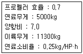
- 2502
- 3007
- 3514
- 40⑤
(정답률: 57%)
15. 다음 중 헬리콥터의 비행시 발생할 수 있는 현상이 아닌 것은?
- 턱언더
- 코리오리스 효과
- 지면효과
- 자이로 세차운동
(정답률: 72%)
16. 등가대기속도 (V2)와 진대기속도(V)에 대한 설명으로 옳은 것은? (단, 밀도비,σ=p/pa : 전압, Ps : 정압, pa : 해면고도 밀도, p : 현재고도 밀도이다.)
- 표준대기의 대류권에서 고도가 증가할수록 진대기 속도가 등가대기속도보다 빠르다.
- 등가대기속도는 고도에 따른 온도변화를 고려한속이다.
- 등가대기속도와 진대기속도의 관계는
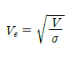
이다. - 베르누이의 정리를 이용하여 등가대기속도를 나타내면
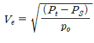
이다.
(정답률: 45%)
17. 항공기가 이륙 후 비행방향에 대해서 양력과 중력이 같고 추력과 항력이 동일하다면 항공기의 운동은?
- 공중에 정지한다.
- 수평 가속비행을 한다.
- 수평 등속비행을 한다.
- 등속 상승비행을 한다.
(정답률: 88%)
18. 헬리곱터는 제자리비행시 균형을 맞추기 위해서 주회전날개 회전면이 회전 방향에 따라 동체의 좌측이나 우측으로 기울게 되는데, 이는 어떤 성분의 역학적 평형을 맞추기 위해서인가? (단, x, y, z는 기체축(동체축) 정의를 따른다.)
- x축 모멘트의 평형
- x축 힘의 평형
- y축 모멘트의 평형
- y축 힘의 평형
(정답률: 69%)
19. 항공기의 이착륙 성능에 대한 설명으로 틀린 것은?
- 일반적으로 이륙속도는 실속속도(power-off 시)의 1.2배로 한다.
- 항공기가 이륙할 때 정풍(Head wind)을 받으면 이륙거리와 이륙시간이 짧아진다.
- 항공기가 착륙할 때 항공기가 장애물고도 위치에서 접지할 때까지의 수평거리를 착륙공정거리라 한다.
- 항공기가 이륙할 때 항공기의 이륙거리는 지상활주거리를 말한다.
(정답률: 76%)
20. 항공기 속도와 소리 속도의 비를 나타낸 무차원수는?
- 마하수
- 프루드수
- 웨버수
- 레이놀즈수
(정답률: 87%)
2과목: 항공기관
21. 옥탄가 80 이라는 항공기 연료를 옳게 설명한 것은?
- 노말헵탄 20%에 세탄 80%의 혼합물과 같은 정도를 나타내는 가솔린
- 노말헵탄 80%에 세탄 20%의 혼합물과 같은 정도를 나타내는 가솔린
- 이소옥탄 80%에 노말헵탄 20%의 혼합물과 같은 정도를 나타내는 가솔린
- 이소옥탄 20%에 노말헵탄 80%의 혼합물과 같은 정도를 나타내는 가솔린
(정답률: 87%)
22. 그림은 어떤 열역학 사이클을 나타낸 것인가?(문제 오류고 그림 상태가 안좋습니다. 정답은 3번입니다. 참고용으로만 사용하세요.)
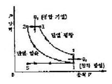
- 합성사이클
- 정적사이클
- 정압사이클
- 카르노사이클
(정답률: 46%)
23. 가스터빈기관의 윤활계통에서 저온탱크계통(Coldtank type)에 대한 설명으로 옳은 것은?
- 냉각기에서 냉각된 윤활유는 오일노즐을 거치면서 가열되며 오일탱크로 이동한다.
- 윤활유탱크의 윤활유는 연료가열기에 의하여 가열된다.
- 윤활유는 배유펌프에서 윤활유탱크로 곧바로 이동한다.
- 냉각기가 배유펌프와 탱크사이에 위치하여 냉각된 윤활유가 탱크로 유입된다.
(정답률: 66%)
24. 성형왕복기관에서 기관정지 후 하부에 위치한 실린더에서 오일이 실린더 상부 쪽으로 스며들어 축적되는 현상은?
- 베이퍼 락(Vapor lock)
- 임팩트 아이스(Impact ice)
- 하이드로릭 락(Hydraulic lock)
- 이베포레이션 아이스(Evaporation ice)
(정답률: 76%)
25. 가스터빈기관에서 터빈을 통과하는 가스의 압력과 속도는 변하지 않고 흐름 방향만 바뀌는 터빈은?
- 충동터빈
- 구동터빈
- 반동터빈
- 이차터빈
(정답률: 63%)
26. 열역학에서 문제의 대상이 되는 지정된 양의 물질이나 공간의 지정된 영역을 무엇이라 하는가?
- 물질(Substance)
- 계(System)
- 주위(Surrounding)
- 경계(Boundary)
(정답률: 83%)
27. 왕복기관의 오일탱크에 대한 설명으로 옳은 것은?
- 일반적으로 오일탱크는 오일펌프 입구보다 약간 높게 설치한다.
- 물이나 불순물을 제거하기 위해 탱크 밑바닥에는 딥스틱이 있다.
- 윤활유의 열팽창에 대비해서 드레인 플러그가 있다.
- 오일탱크의 재질은 일반적으로 강도가 높은 철판으로 제작된다.
(정답률: 78%)
28. 프로펠러 날개의 루트 및 허브를 덮는 유선형의 커버로 공기흐름을 매끄럽게 하여 기관효율 및 냉각효과를 돕는 것은?
- 램(Ram)
- 커프스(Cuffs)
- 가버너(Governor)
- 스피너(Spinner)
(정답률: 59%)
29. 일반적인 초음속기의 배기노즐 형태로 적절한 것은?
- 수축형
- 수축-확산형
- 확산형
- 확산-수축형
(정답률: 80%)
30. 쌍발 항공기에 장착된 가스터빈기관의 공압 시동기(Pneumatic starter)에 필요한 고압공기로 사용이 불가능한 것은?
- 램 공기(Ram air)
- 보조동력장치에 의한 고압공기
- 지상동력장비에 의한 고압공기
- 시동된 타기관의 압축기 블리드공기
(정답률: 63%)
31. 왕복기관을 시동할 때 기화기 혼합조정 레버의 위치는?
- "full rich"에 놓고 시동한다.
- "auto rich"에 놓고 시동한다.
- "full lean"에 놓고 primer로 시동한다.
- "idle cut off"에 놓고 primer로 시동한다.
(정답률: 65%)
32. 다음 중 항공기 왕복기관의 흡입계통에서 작은 양의 공기누설이 기관 작동에 큰 영향을 미치는 경우는?
- 저속 상태일 때
- 고출력 상태일 때
- 이륙출력 상태일 때
- 연속사용 최대출력 상태일 때
(정답률: 60%)
33. 왕복기관에서 실린더의 압축비로 옳은 것은? 단, Vc : 연소체적, Vs : 행정체적이다.)
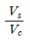
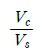
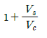
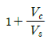
(정답률: 60%)
34. 피스톤의 지름이 16cm, 행정거리가 0.15m, 실린더 수가 6개인 왕복기관의 총 행정체적은 약 몇 L인가?
- 13
- 18
- 23
- 28
(정답률: 60%)
35. 다음 중 연료를 직접 분사하여 특별한 장치가 없이 압축열에 의한 자연착화를 시키는 압축 점화 방법의 기관은?
- 가스기관
- 가솔린 기관
- 디젤기관
- Hesselman 기관
(정답률: 65%)
36. 터보제트기관에서 비행속도 Va[ft/s], 진추력 Fn[lbf]을 이용하여 추력마력[hp]을 옳게 나타낸 것은?
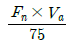
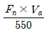
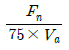
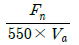
(정답률: 64%)
37. 아음속에서 연료 소비율과 소음이 작기 때문에 민간 여객기에 널리 이용되는 가스터빈기관 형식은?
- 펄스제트기관
- 램제트기관
- 터보제트기관
- 터보팬기관
(정답률: 82%)
38. 일반적인 프로펠러의 깃각(Blade angle)에 대한 설명으로 옳은 것은?
- 깃의 전 길이에 걸쳐 일정하다.
- 일반적으로 프로펠러 중심에서 50% 되는 위치의 각도를 말한다.
- 깃 뿌리(Blade Root)에서 깃 끝(Blade Tip)으로 갈수록 커진다.
- 깃 뿌리(Blade Root)에서 깃 끝(Blade Tip)으로 갈수록 작아진다.
(정답률: 76%)
39. 항공기기관 점검시 작동 시간과 비행 사이클의에 따라 결정되는 검사는?
- 일제 검사
- 주기 검사
- 순간 검사
- 부정기 검사
(정답률: 89%)
40. 가스터빈기관의 연료조정장치에 대한 설명으로 옳은 것은?
- 수감요소 중 기관회전수가 증가하면 연료를 증가시킨다.
- 스로틀레버 급가속시 혼합비의 과희박으로 압축기 실속을 일으킬 수 있다.
- 연료조정장치는 유압기계식과 압력식이 주로 쓰인다.
- 수감요소 중 압축기 출구압력이 증가하면 연료를 증가시킨다.
(정답률: 49%)
3과목: 항공기체
41. 일반적인 항공기구조에서 알루미늄 합금이나 복합 소재를 사용하지 않는 것은?
- 랜딩기어
- 프레임
- 스트링커
- 동체 스킨
(정답률: 79%)
42. 다음 중 페일 세이프 구조(Fail safe structure) 방식의 종류가 아닌 것은?
- 단순 구조(Simple Structure)
- 더블 구조(Double Structure)
- 백업 구조(Back-up Structure)
- 리던던트 구조(Redundant Structure)
(정답률: 80%)
43. 단면이 균일한 봉이 인장하중을 받았을 때 축방향 변형율에 대한 가로방향 변형율의 비를 나타내는 것은?
- 후크비
- 전단비
- 탄성비
- 푸아송비
(정답률: 60%)
44. 다음과 같은 특성을 가진 항공기에 사용되는 합성고무는?
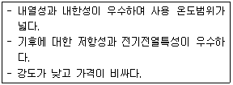
- 부틸고무
- 실리콘고무
- 플루오르고무
- 니트릴고무
(정답률: 61%)
45. 리벳작업시 구멍뚫기작업의 순서가 옳은 것은?
- 드릴링(Drilling) → 버링(Burring) → 리밍(Reaming)
- 드릴링(Drilling) → 리밍(Reaming)→ 버링(Burring)
- 리밍(Reaming) → 드릴링(Drilling) → 버링(Burring)
- 리밍(Reaming) → 버링(Burring) → 드릴링(Drilling)
(정답률: 71%)
46. 항공기에서 사용되는 특수용접에 속하지 않는 것은?
- 플라스마 용접
- 금속 불활성 가스용접
- 산소·아세틸렌 가스용접
- 텅스텐 불활성 가스용접
(정답률: 60%)
47. 볼트그립 길이와 볼트가 장착되는 재료의 두께에 관한 설명으로 옳은 것은?
- 볼트가 장착될 재료의 두께는 볼트그립 길이의 2배이어야 한다.
- 볼트가 장착될 재료의 두께는 볼트그립 길이에 볼트직경의 길이를 합한 것과 같아야 한다.
- 볼트그립 길이는 가장 얇은 판의 두께의 3배가 되어야 한다.
- 볼트그립 길이는 볼트가 장착되는 재료의 두께와 같거나 약간 길어야 한다.
(정답률: 74%)
48. 무게가 2950kg 이고, 중심위치가 기준선 후방 300cm 인 항공기에서 기준선 후방 100cm 에 위치한 50kg 의 전자장비를 장탈하고, 기준선 후방 500cm 에 위치한 화물실에 100kg의 비상물품을 실었다. 이때 중심위치는 기준선 후방 몇 cm에 위치하는가?
- 250
- 310
- 350
- 410
(정답률: 66%)
49. 항공기 구조에서 론저론(Longeron)에 대한 설명으로 옳은 것은?
- 날개에서 날개보를 결합하기 위한 세로 방향 부재
- 가벼운 판금에 강성을 주기 위하여 플랜지에 부착되는 부재
- 기관이나 연소실을 객실로부터 분리시키기 위한 수직 부재
- 동체나 나셀에서 앞·뒤 방향으로 배치되며 다양한 단면의 모양의 부재
(정답률: 57%)
50. 항공기의 카울링과 페어링(Fairing)을 장착하는데 사용되는 캠록패스너(Cam lock fastener)의 구성으로 옳은 것은?
- Grommet, Cross pin, Receptacle
- Stud assembly, Grommet, Cross pin
- Stud assembly, Grommet, Receptacle
- Stud assembly, Receptacle, Cross pin
(정답률: 62%)
51. 밀착된 구성품 사이에 작은 진폭의 상대운동이 일어날 때 발생하는 제한된 형태의 부식은?
- 점(Pitting)부식
- 피로(Fatique)부식
- 찰과(Fretting)부식
- 이질금속간의(Galvanic)부식
(정답률: 76%)
52. 다음 중 조종계통의 리깅(Rigging)시 필요한 도구가 아닌 것은?
- 프로트랙터(Protractor)
- 텐션 미터(Tension meter)
- 텐션 레귤레이터(Tension regulator)
- 케이블 리깅 텐션 챠트(Cable rigging tensioncharts)
(정답률: 46%)
53. 강착장치(Landing gear)에서 올레오 완충 장치(Oleo shock absorber)의 충격흡수 원리로 옳은 것은?
- 스트럿 실린더(Strut cylinder)에 공급되는 공기의 마찰에너지를 이용하여 충격을 흡수한다.
- 공기의 압축성효과에 의한 탄성에너지와 작동유 흐름의 제한에 의한 에너지 손실에 의해 충격이 흡수되는 장치이다.
- 헬리컬 스프링(Helical spring)이 탄성체의 탄성변형 에너지형식으로 충격을 흡수한다.
- 리프스프링(Leaf spring) 자체가 랜딩 스트럿(Landing strut)역할을 하여 충격을 굽힘에너지로 흡수한다.
(정답률: 79%)
54. 케이블 조종계통(Cable control system)에서 7x19의 케이블을 옳게 설명한 것은?
- 19개의 와이어로 7번을 감아 케이블을 만든 것이다.
- 7개의 와이어로 19번을 감아 케이블을 만든 것이다.
- 19개의 와이어로 1개의 다발을 만들고, 이 다발 7개로 1개의 케이블을 만든 것이다.
- 7개의 와이어로 1개의 다발을 만들고, 이 다발 19개로 1개의 케이블을 만든 것이다.
(정답률: 78%)
55. 그림과 같이 하중(W)이 작용하는 보를 무엇이라하는가?
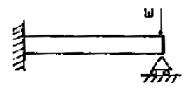
- 외팔보
- 돌출보
- 고정보
- 고정지지보
(정답률: 66%)
56. 그림과 같은 하중배수선도에서 n 의 값은 얼마인가? (단, Vs 는 실속속도이다.)
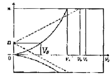
- 1
- 2
- 2.5
- 3
(정답률: 74%)
57. 그림과 같은 와셔의 명칭은?
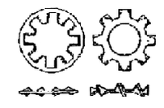
- 평와셔(Plate washer)
- 스프링와셔(Spring washer)
- 테이퍼핀와셔(Taper pin washer)
- 이붙이와셔(Toothed lock washer)
(정답률: 78%)
58. 리벳의 배치와 관련된 용어 설명으로 틀린 것은?
- 횡단피치는 리벳 열과 열사이의 거리이다.
- 리벳피치의 최소간격은 리벳지름의 3배이다.
- 리벳 끝을 기준으로 열과 열 사이를 피치라 한다.
- 끝거리는 판재의 가장 자리에서 첫 번째 리벳구멍 중심까지의 거리이다.
(정답률: 56%)
59. 복합 소재의 부품을 경화시킬 때 표면에 압력을 가하기 위해 사용하는 것으로 클램프로 고정할 수 없는 대형윤곽의 표면에 사용하는 것은?
- 직포
- 숏 백
- 램프
- 스프링 클램프
(정답률: 65%)
60. 다음과 같은 구조물에서 케이블 AB에 발생하는 장력은 약 몇 N 인가?
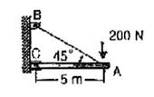
- 282.24
- 265.84
- 242.84
- 212.84
(정답률: 49%)
4과목: 항공장비
61. 고도계에서 압력을 증가시켰다 다시 감소하면 출발점을 전후한 위치에서 오차가 발생하는데 이를 무엇이라 하는가?
- 잔류효과
- DRIFT
- 온도오차
- 밀도오차
(정답률: 66%)
62. 항공기 유압계통에서 축압기(Accumulator)의 사용 목적으로 틀린 것은?
- 비상용 압력원으로 사용하기 위하여
- 계통 작동시 충격 완화 역할을 위하여
- 펌프 출력 유압유의 맥동 방지를 위하여
- 유압유 내에 있는 공기를 저장하기 위하여
(정답률: 61%)
63. 항공기에서 사용되는 공기압 계통에 대한 설명 중 가장 관계가 먼 내용은?
- 공기압의 재활용으로 귀환관이 필요하나 유압계통 보다는 계통이 단순하다.
- 소형 항공기에서는 브레이크장치, 플랩작동장치 등을 작동시키는데 사용한다.
- 적은 양으로 큰 힘을 얻을 수 있고, 깨끗하며 불연성(Non-inflammable)이다.
- 대형 항공기에는 주로 유압계통에 대한 보조수단으로 사용한다.
(정답률: 65%)
64. 지자기의 3요소 중 복각에 대한 설명으로 옳은 것은?
- 지자력의 지구 수평에 대한 분력을 의미한다.
- 지자기 자력선의 방향과 수평선 간의 각을 말하며, 양극으로 갈수록 90° 에 가까워진다.
- 지축과 지자기축이 서로 일치하지 않음으로써 발생되는 진방위와 자방위의 차이를 말한다.
- 지자력의 지구 수평에 대한 분력을 말하며 적도 부근에서는 최대이고 양극에서는 0°에 가깝다.
(정답률: 58%)
65. 항공기의 조난 위치를 알리고자 구난 전파를 발신하는 비상 송신기는 지정된 주파수로 몇 시간 동안 구조신호를 계속 보낼 수 있도록 되어 있는가?
- 48시간
- 24시간
- 15시간
- 8시간
(정답률: 74%)
66. 항공기의 대형화에 따라 지시부와 수감부 간의 거리가 멀어져 원격 지시계기의 일종으로 발전하게 된것으로 기계적인 직선 또는 각 변위를 수감하여 전기적인 양으로 변환한 다음 조종석에서 기계적인 변위로 재현시키는 계기는?
- 자기계기
- 싱크로계기
- 회전계기
- 자이로계기
(정답률: 60%)
67. HF 통신방식을 DSB 방식과 비교하여 주로 SSB 방식으로 하는 이유가 아닌 것은?
- 신호대 잡음비가 DSB 방식보다 개선된다.
- 송신기의 소비전력이 DSB 방식보다 적게 든다.
- 회로 구성이 DSB 방식보다 간단하여 제작 가격이 저렴하다.
- DSB 방식보다 점유 주파수 대역폭이 1/2로 줄어든다.
(정답률: 61%)
68. 다음 중 압력측정에 사용하지 않는 것은?
- 자이로(Gyro)
- 아네로이드(Aneroid)
- 벨로즈(Bellows)
- 다이아프램(Diaphragm)
(정답률: 72%)
69. 교류회로에서 전압계는 100V, 전류계는 10A, 전력계는 800W를 지시하고 있다면 이 회로에 대한 설명으로 틀린 것은?
- 유효전력은 800W이다.
- 피상전력은 1kVA이다.
- 무효전력은 200Var이다.
- 부하는 800W를 소비하고 있다.
(정답률: 61%)
70. 항공기용 회전식 인버터의 속도제어를 하는 방법은?
- 직류전원의 전압을 변화하여
- 교류발전기의 전압을 변화하여
- 교류발전기의 출력전류를 변화하여
- 직류전동기의 분권계자 전류를 제어하여
(정답률: 61%)
71. 지상 관제사가 공중 감시장치(ATC)계통을 통해서 얻는 정보가 아닌 것은?
- 편명 및 진행방향
- 위치 및 방향
- 상승률 또는 하강률
- 고도 및 거리
(정답률: 75%)
72. 등가대기속도에 고도 변화에 따른 공기밀도를 수정한 속도는?
- CAS
- EAS
- IAS
- TAS
(정답률: 61%)
73. 비상시 사용되는 배터리의 DC 전원을 AC 전원으로 전환시켜주는 장치는?
- GPU(Ground Power Unit)
- APU(Auxiliary Power Unit)
- 스태틱 인버터(static Inverter)
- TRU(Transformer Rectifier Unit)
(정답률: 81%)
74. 다음 중 직류의 전압을 높이거나 낮출 때 사용되는 장치는?
- 정류기(Rectifier)
- 다이나모터(Dynamotor)
- 인버터(Inverter)
- 변압기(Transformer)
(정답률: 37%)
75. 미리 설정된 정격값 이상의 전류가 흐르면 회로를 차단하는 것으로 재사용이 가능한 회로보호 장치는?
- 퓨즈(Fuse)
- 릴레이(Relay)
- 서킷 브레이커(Circuit breaker)
- 서큘라 커넥터(Circular connector)
(정답률: 69%)
76. 유압계통에서 리저버(Reservoir)내의 베플(Baffle)과 핀(Fin)의 가장 중요한 역할은?
- 작동유의 열을 식힌다.
- 펌프 안에 공기가 유입되는 것을 방지한다.
- 리저버(Reservoir) 안에 공기가 잘 가압되도록 한다.
- 작동유의 온도상승에 따른 가압공기의 온도를 낮춘다.
(정답률: 60%)
77. 다음 중 400Hz의 교류 전원을 필요로 하지 않는 것은?
- 마그네신
- 진기식 수직 자이로
- 전기식 회전계
- 전기 용량식 연료량계
(정답률: 31%)
78. ILS(Instrument Landing System)를 구성하는 장치로만 나열된 것은?
- ADF, M/B
- LRRA M/B
- VOR, Localizer
- Localizer, Glide Slope
(정답률: 84%)
79. 기상 레이더(Weather radar)의 본래 목적인 구름이나 비의 상태를 보기 위한 안테나 패턴(AntennaPattern)은?
- Pencil beam
- Tilt angle beam
- Control beam
- Cosecant square beam
(정답률: 53%)
80. 지상에 있는 항공기의 기체표면이 이미 결빙해 있을 때 분사해 주는 제빙액으로 적합한 것은?
- 질소
- MIL-H-5026
- 4염화탄소
- 에틸렌글리콜
(정답률: 73%)
항공기가 세로안정성을 가지기 위해서는 받음각이 증가함에 따라 빗놀이 모멘트값이 정(+)의 값을 가져야 한다. 이는 항공기가 기울어져도 자연스럽게 원래의 자세로 돌아오는 성질을 나타내며, 이를 "양의 빗놀이 모멘트"라고 한다. 이러한 성질은 항공기의 안정성을 유지하는 데 매우 중요하다.
반면에 받음각이 증가함에 따라 키놀이 모멘트값이 부(-)의 값을 갖는다는 것은 항공기가 수직 방향으로 불안정해지는 것을 의미한다. 따라서 항공기의 안정성을 유지하기 위해서는 빗놀이 모멘트값이 양수이어야 한다.